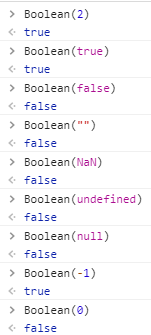
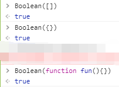
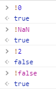
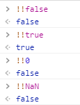
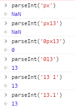

Boolean()
把其它数据类型的值转换为布尔类型
只有0、NaN、空字符串、null、undefined、false这六个数据值转换为布尔类型的false， 其余的都会被转换为true


！
!=：不等于
叹号在JS中还有一个作用：取反，先把值转换为布尔类型，然后再去取反。

!!
在一个叹号取反的基础上在取反，取两次反相当于没有做操作，但是却已经把其它类型值转换为布尔类型了，和Boolean() 是相同的效果

在JS中 单引号和双引号包裹起来的都是字符串
12 ->number
'12' -> string
'[12, 23, 45]' -> string
常用方法
charAt() charCodeAt()
substr() substring() slice()
toUpperCase() toLowerCase()
indexOf() lastIndexOf()
split()
replace()
match()
…
0 12 -12 12.5 ，此外JS中多增加了一个number类型的数据：
NaN
typeof NaN => “number”
NaN
NaN 是not a number的缩写，它不是一个数，但是属于number类型
NaN == NaN: 其结果为false， NaN和任何其他值都不相等
isNaN()
用来检测当前这个值是否是非有效数字，如果不是有效数字，则返回结果为true, 反之是有效数字则为false
isNaN(0) => false
isNaN(NaN) => true
isNaN('12') => false, 当我们使用isNaN检测值的时候，检测的值不是number类型的，浏览器会默认把值先转换为number类型，然后再去检测
Number()
把其它数据类型值转换为number类型 的值
`javascript
Number(‘12’) => 12
Number(‘12px’) => NaN 在使用Number转换的时候只要字符串中出现任何一个非有效数字字符，最后的结果都是NaN
Number(true) => 1
Number(false) => 0
Number(NaN) => 0
Number(undefined) => NaN
Number([]) => 把引用数据类型转换为number,首先需要把引用数据类型转为字符串（toString），在把字符串转换为number即可，例如： [] -> ‘’ ‘’ -> 0
Number([12]) -> [12] ->’12’ ‘12’ -> 12
Number([12,23]) -> [12,23] -> ‘12,23’ ‘12,23’
->NaN
Number({name:’zxl’}) => NaN
Number({}) => NaN
**`parseInt()`**
> 也是吧其它数据类型值装换为number, 和Number方法在处理字符串的时候有所区别
```javascript
Number('12px') -> NaN
parseInt('12px') -> 12
pareInt('12px13') -> 12

提取规则：从左到右依次查找有效数字字符，直到遇见非有效数字字符为止（不管后面时候还有，都不找了），把找到的转换为数字，如果第一个都不是数字，那么结果为NaN。
parseFloat()
在parseInt()的基础上可以识别小数点
`javascript
parseInt(‘12.5px’) -> 12
parseFloat(‘12.5px’) -> 12.5
`
parseInt()常用的只需要床底一个值作为参数即可，但是它支持多个参数，但是它还存在其它参数，
例如：parseInt(‘12.5’, 10)的意思是：将12按照十进制进行解析。编写则默认转换为十进制。
null: 空， 没有
undefined: 未定义， 没有‘’: 空字符串， 没有
0： 也可以理解为没有
空字符串和null的区别
拿种树打比方：
空字符串属于挖了个坑，但是没有种任何东西
null是连坑都没挖空字符串相对于null来说开辟了内存，消耗了那么一丢丢的性能
null和undefined的区别
null一般都是暂时没有，预期中以后会有的（可能以后也没有达到预期）：在JS中null一般都是手动先赋值为null,后期我们再给其赋具体值
undefined: 完全没在预料之内的
例子：
小明是个帅气的男孩子，他现在的女朋友滴null,他的男朋友是undefined